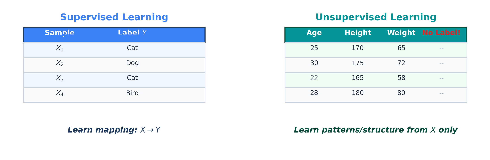
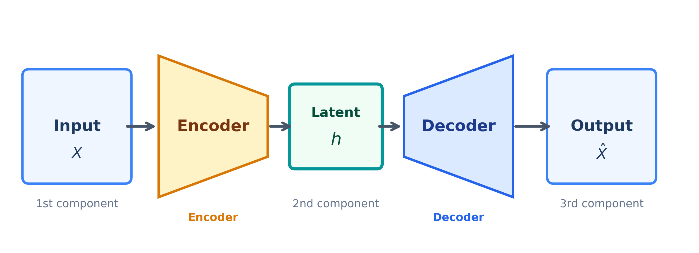
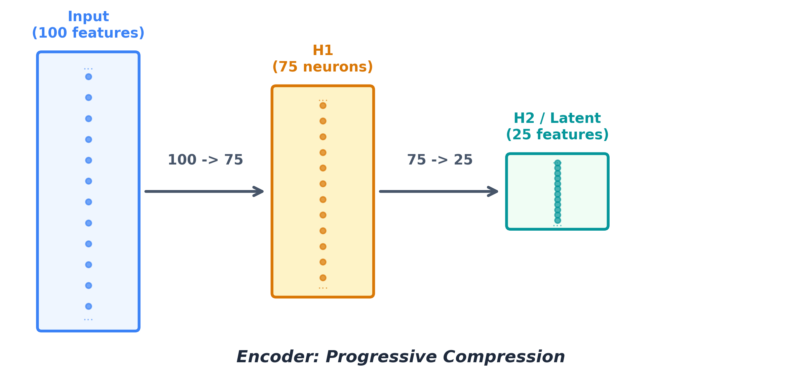
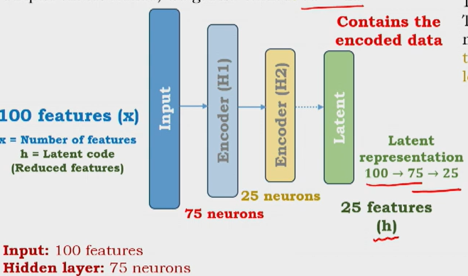
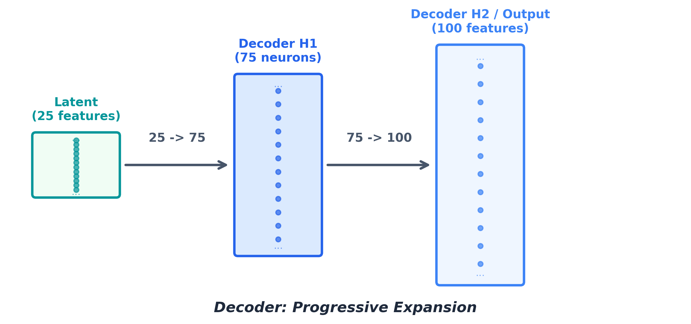
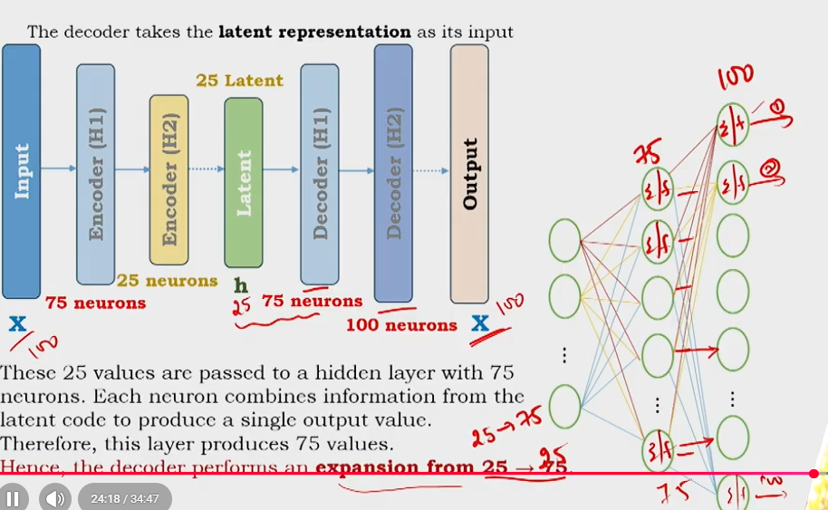
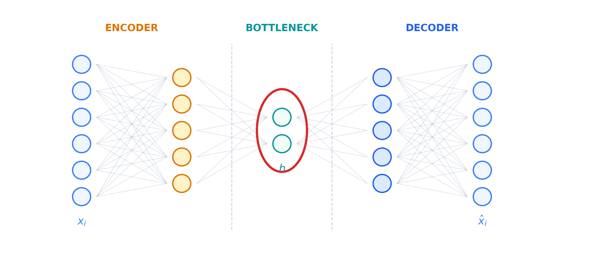
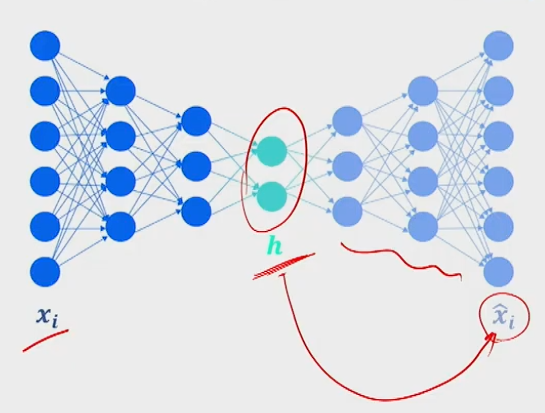
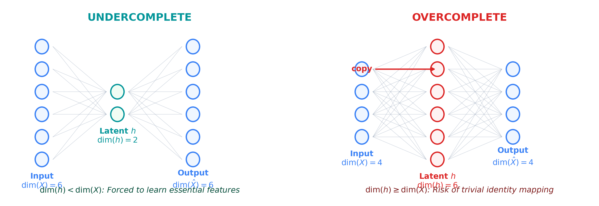

Introduction to Autoencoder
Architecture, encoder-decoder mechanics, undercomplete vs. overcomplete autoencoders, and the representation learning paradigm.
Autoencoders are among the most conceptually elegant models in unsupervised deep learning. They learn to compress data into compact representations and then reconstruct it — all without requiring a single label. This chapter walks through the architecture from the ground up, the mechanics of the encoder and decoder, what happens when the bottleneck is too small or too large, and where this all leads.
1. Supervised vs. Unsupervised Learning
Most familiar deep learning architectures — feedforward networks, CNNs, RNNs — are designed for supervised learning. Each input $X$ is paired with a label $Y$, and the model learns the mapping $X \to Y$. The objective is to minimise prediction error relative to known labels, and the model generalises from labelled examples to unseen data.
But labels are expensive. In many real-world settings, we have plenty of raw data and almost no annotations. This brings us to unsupervised learning: the model receives only input $X$, without any associated labels. Rather than learning a specific input-output mapping, it must discover hidden patterns, correlations between features, and the intrinsic structure of the data on its own.

| Aspect | Supervised Learning | Unsupervised Learning |
|---|---|---|
| Input | $X$ paired with label $Y$ | $X$ only (no labels) |
| Objective | Learn mapping $X \to Y$ | Discover patterns / structure in $X$ |
| Examples | Classification, regression | Clustering, dimensionality reduction |
| Data requirement | Labeled dataset required | Unlabeled data sufficient |
A special category of unsupervised models aims to learn a meaningful representation of the data — a compressed, informative encoding that captures the essential characteristics of the input. This is the core objective of autoencoders.
2. Definition and Purpose
The model serves two intertwined objectives:
- Representation learning: Learn a compact, informative representation $h$ of the input $X$.
- Reconstruction learning: Reconstruct $\hat{X}$ from $h$ such that $\hat{X} \approx X$.
These objectives are not independent. The quality of reconstruction depends entirely on the quality of the learned representation. If $h$ captures the essential structure of $X$, the decoder can reconstruct $\hat{X} \approx X$ from $h$ alone. Conversely, poor representation leads to poor reconstruction, providing a natural feedback signal for training.
3. Architecture
The autoencoder consists of three primary components:
| Component | Symbol | Role |
|---|---|---|
| Encoder | $\text{Enc}(X)$ | Maps input $X$ to a compact latent representation $h$ |
| Latent code | $h$ | The compressed internal representation of $X$ |
| Decoder | $\text{Dec}(h)$ | Reconstructs $\hat{X}$ from latent representation $h$ |
The overall data flow is:
$$X \xrightarrow{\text{encoder}} h \xrightarrow{\text{decoder}} \hat{X}$$

The latent representation $h$ plays the central role. Its dimensionality relative to $X$ has profound implications for what the model learns — we will examine this in Section 7.
4. Encoder: Representation Learning
The encoder maps the input $X$ to a lower-dimensional latent representation $h$ by progressively reducing the number of neurons in hidden layers. Each neuron computes a weighted sum of all inputs plus a bias term, passed through an activation function — the standard fully-connected operation.
4.1 Compression Process
Consider a tabular example with 100 input features. The encoder reduces dimensionality step by step:
$$\dim(X) = 100 \xrightarrow{H_1} 75 \xrightarrow{H_2} 25 = \dim(h)$$
where $H_1$ is the first hidden layer with 75 neurons (fully connected to all 100 inputs), $H_2$ is the second hidden layer with 25 neurons (fully connected to all 75 outputs from $H_1$), and $h$ is the latent representation with 25 features.


The reduction from 100 to 75, then from 75 to 25, enforces a constraint on the network. Since the target is only 25 dimensions, the encoder must capture only the most important features, discarding redundant or less informative aspects. This forced constraint is what makes the latent representation meaningful — it contains only essential information.
The dimension of $h$ is a hyperparameter. Smaller latent dimensions impose stronger constraints, forcing more aggressive compression but potentially losing important information; larger dimensions allow more information through but may reduce the quality of the learned representation.
5. Decoder: Reconstruction Learning
The decoder takes the latent representation $h$ as input and progressively expands it back to the original input dimension through hidden layers with increasing numbers of neurons. Like the encoder, it is a fully-connected network — but it operates in reverse, expanding rather than compressing.
5.1 Expansion Process
Continuing the example with a 25-dimensional latent code $h$, the decoder expands as follows:
$$\dim(h) = 25 \xrightarrow{H_1} 75 \xrightarrow{H_2} 100 = \dim(\hat{X})$$
where decoder $H_1$ has 75 neurons (fully connected to all 25 latent values), and decoder $H_2$ is the output layer with 100 neurons (fully connected to all 75 outputs from $H_1$).


The expansion is systematic: each output neuron produces a value that is a weighted combination of all inputs from the previous layer (plus bias and activation). No data is added or copied — the decoder reconstructs from the compressed information alone. If the latent code $h$ has captured the essential structure, the decoder can produce $\hat{X} \approx X$ despite starting from only 25 dimensions.
6. Complete Autoencoder Network
The full autoencoder combines encoder and decoder into a single network with a bottleneck at the latent representation $h$. The encoder compresses the input into a lower-dimensional bottleneck, and the decoder expands it back to the original dimension.
The complete data flow and its objectives are:
$$X \xrightarrow{\text{Enc}} h \xrightarrow{\text{Dec}} \hat{X}, \qquad \text{with goal } \hat{X} \approx X$$


- Objective 1 (Representation learning): The encoder learns $h = \text{Enc}(X)$, a compact representation of $X$.
- Objective 2 (Reconstruction learning): The decoder reconstructs $\hat{X} = \text{Dec}(h)$ from $h$, aiming for $\hat{X} \approx X$.
These are achieved simultaneously during training — minimising reconstruction error $\|X - \hat{X}\|$ implicitly forces the encoder to learn a good representation and the decoder to learn a good reconstruction function.
7. Undercomplete vs. Overcomplete Autoencoders
The relationship between $\dim(h)$ and $\dim(X)$ fundamentally determines the behaviour of the autoencoder. Two distinct categories arise.
7.1 Undercomplete Autoencoder
When $\dim(h) < \dim(X)$, the encoder is constrained — it cannot simply copy all input information. It must learn to prioritise the most important features and discard redundant or less informative ones. This forced constraint ensures meaningful representation learning.
If the decoder can successfully reconstruct $\hat{X} \approx X$ from a lower-dimensional $h$, then $h$ must contain the essential information. This implies $h$ is an effective, nearly loss-free encoding of the input.
7.2 Overcomplete Autoencoder
When $\dim(h) \geq \dim(X)$, the autoencoder risks learning a trivial identity mapping. With enough capacity, the encoder can simply copy input values directly into the latent space, fill remaining dimensions with zeros, and the decoder extracts the original values — no meaningful learning occurs. This is sometimes called trivial learning because no useful representation is formed.
For example, if $\dim(X) = 4$ and $\dim(h) = 6$, the encoder could copy the 4 input values into 4 of the 6 latent dimensions and set the remaining 2 to zero. The decoder reads out the original 4 values, producing $\hat{X} = X$ without any compression or feature extraction. This is pure memorisation through identity mapping.

| Property | Undercomplete | Overcomplete |
|---|---|---|
| Latent dimension | $\dim(h) < \dim(X)$ | $\dim(h) \geq \dim(X)$ |
| Learning behaviour | Forced to learn essential features | May learn trivial identity mapping |
| Representation quality | Meaningful, compact | Potentially meaningless |
| Practical use | Preferred for real applications | Avoided without regularisation |
8. Loss Function Preview: Reconstruction Loss
The loss function for autoencoders is reconstruction loss, which measures how far the reconstructed output $\hat{X}$ deviates from the original input $X$. This is natural: the network should reconstruct its own input as accurately as possible.
In its simplest form:
$$\mathcal{L}_{\text{recon}} = \|X - \hat{X}\|^2 = \|X - \text{Dec}(\text{Enc}(X))\|^2$$
where $\mathcal{L}_{\text{recon}}$ is the reconstruction loss, $X$ is the original input, $\hat{X} = \text{Dec}(\text{Enc}(X))$ is the reconstructed output, and $\|\cdot\|^2$ denotes the squared norm (mean squared error, in this case).
Minimising this loss simultaneously optimises both objectives: the encoder learns to produce representations that preserve the most reconstruction-relevant information, and the decoder learns to map those representations back to the original input space as accurately as possible.
The detailed formulation and variants of reconstruction loss — including mean squared error and binary cross-entropy — are covered in the next lecture.